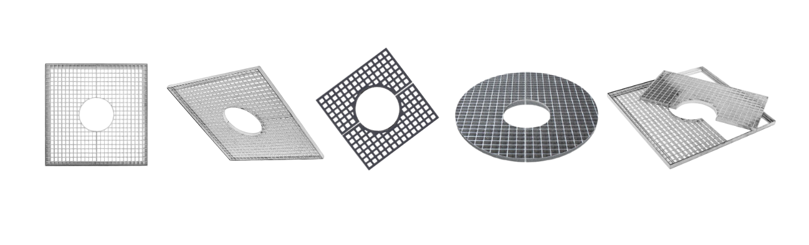

Acerca de
Los alcorques vacíos en la acera de Pinto, municipio al sur de la Comunidad de Madrid, eran el ejemplo visual y concreto de que el Ayuntamiento había mandado talar varios de los árboles que se alzaban, alineados, a ambos lados de la avenida. Nos quedamos sin sombra, decían los vecinos, y así se tituló el texto. Aquel fue el primer reportaje que escribí en el ámbito del periodismo local.
Gracias a este artículo aprendí dos cosas. La primera, qué es un alcorque: uno de esos pequeños espacios que se dejan en las aceras para albergar un árbol. La segunda, que todos los días atravesamos lugares y objetos los cuales, a pesar de su aparente familiaridad, nos son totalmente desconocidos.

Sobre mí (Celia Márquez Coello)
Me gradué en Periodismo y Humanidades por la Universidad Carlos III de Madrid, donde también cursé un máster de investigación en Estudios Culturales. Como periodista me he especializado en reportaje, colaborando con diferentes medios de comunicación y revistas. Me interesan el periodismo narrativo y la exploración de nuevos formatos y perspectivas para contar historias.